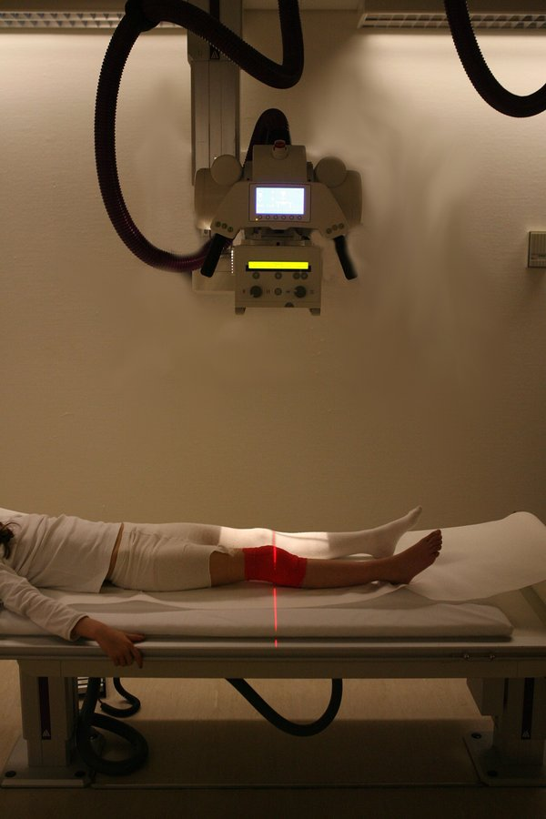

الأشعة السينية
داخل X-ray tube يُسخَّن سلك filament في cathode (السالب) فيطلق إلكترونات.
فرق جهد عالٍ (kV) يسرّع الإلكترونات نحو anode (الموجب)، فتصطدم بالهدف وتنتج أشعة سينية (حوالي 1%) وحرارة (حوالي 99%).
الأشعة تمرّ في الجسم وتضعف حسب كثافة النسيج: هذا هو attenuation (التوهين).
العظم يمتصّ أكثر فيظهر أبيض، والهواء يمرّرها فيظهر أسود.
